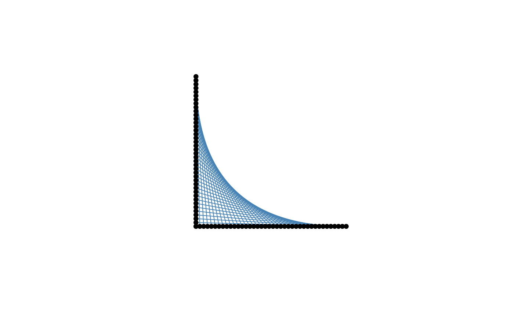
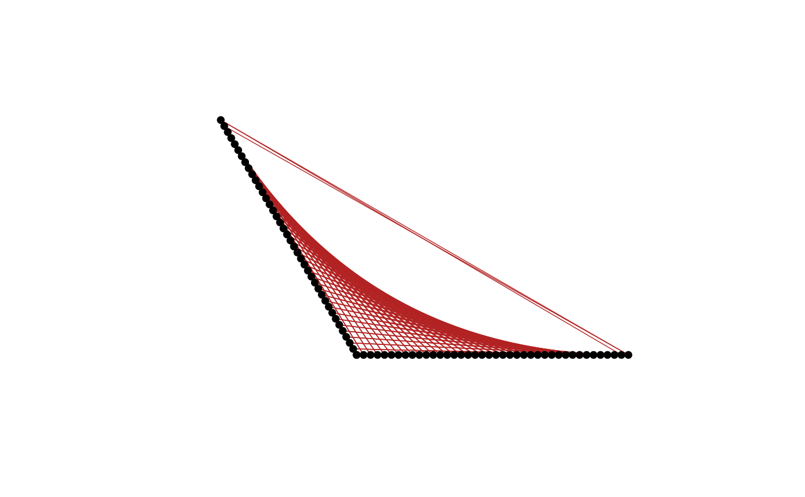
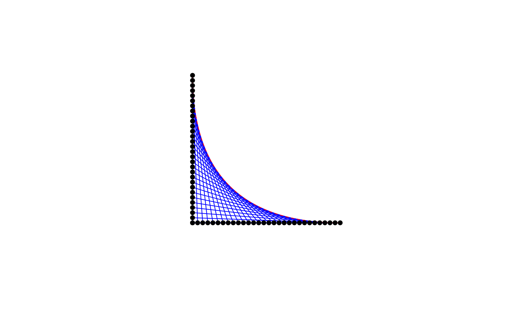
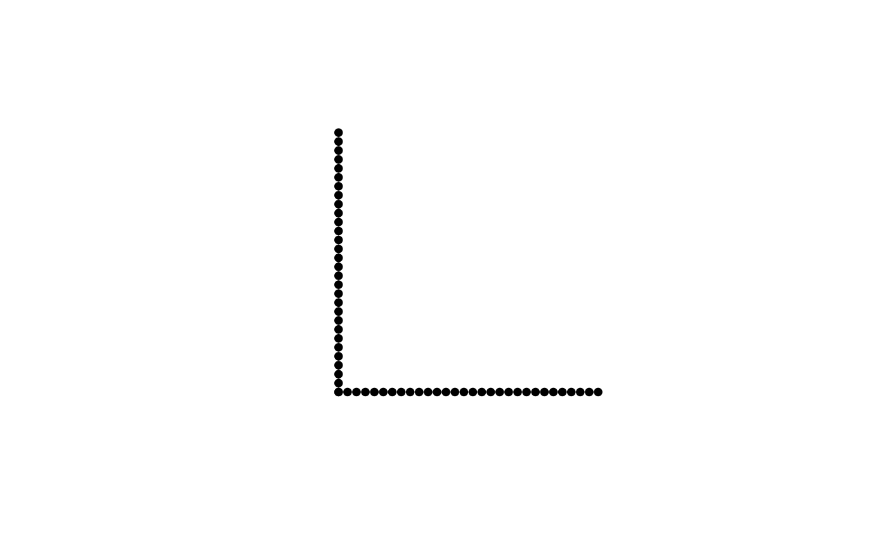

stnet() generates a string art net by placing pegs on two rays that share
a common vertex and connecting corresponding peg positions. The construction
generalizes the classical parabolic string art envelope by allowing the angle
between the two supporting rays to vary.
Usage
stnet(
n = 30,
k = 1,
col = "blue",
lwd = 1,
plot = TRUE,
show_points = TRUE,
show_labels = FALSE,
verbose = FALSE,
length1 = 1,
length2 = 1,
angle = pi/2,
rotate = 0,
show_strings = TRUE,
template = FALSE,
show_envelope = FALSE,
envelope_col = "red",
envelope_lwd = 1,
envelope_lty = 2,
point_col = "black",
point_cex = 0.8,
point_pch = 19,
point_bg = "white",
label_cex = 0.7,
label_col = "black",
border_col = "grey50",
border_lwd = 1,
bg = "white",
main = NULL
)Arguments
- n
Integer. Number of pegs placed on each ray. Must be at least 3.
- k
Integer. Number of shifted sweeps used in the construction. Must satisfy
1 <= k <= n - 1. The classical net is obtained withk = 1.- col
String color passed to
graphics::segments().- lwd
Positive number. Line width used to draw the strings.
- plot
Logical. If
TRUE, draws the figure.- show_points
Logical. If
TRUE, draws the pegs.- show_labels
Logical. If
TRUE, draws peg labels.- verbose
Logical. If
TRUE, prints a short audit to the console.- length1
Positive number. Length of the first ray.
- length2
Positive number. Length of the second ray.
- angle
Numeric. Angle in radians from the first ray to the second ray. Must not be a multiple of
pi.- rotate
Numeric. Rotation angle in radians applied to the whole net.
- show_strings
Logical. If
TRUE, draws the string connections.- template
Logical. If
TRUE, draws only the peg template, without string connections. This is equivalent to settingshow_strings = FALSEandshow_points = TRUE.- show_envelope
Logical. If
TRUE, draws the theoretical envelope of the basic construction.- envelope_col
Color used for the theoretical envelope.
- envelope_lwd
Positive number. Line width used for the envelope.
- envelope_lty
Line type used for the envelope.
- point_col
Peg color.
- point_cex
Positive number. Peg size.
- point_pch
Plotting symbol used for pegs.
- point_bg
Peg background color when applicable.
- label_cex
Positive number. Label size.
- label_col
Label color.
- border_col
Ray color.
- border_lwd
Positive number. Ray line width.
- bg
Plot background color.
- main
Optional plot title. If
NULL, no title is displayed.
Value
Invisibly returns a list of class stringart_result with:
- pegs
A
data.framewith columnsindex,x,y,ray, andlocal_index.- connections
A
data.framewith columnsconnection_index,from,to,x_from,y_from,x_to,y_to,length,sweep,offset,local_from, andlocal_to.- total_length
Total string length.
- audit
A character vector with audit information.
- meta
A list with construction metadata.
Details
The construction uses two rays with a common vertex. Pegs are placed uniformly along the first ray from the common vertex to the first endpoint and along the second ray from the second endpoint back to the common vertex.
For k = 1, the peg at local position i on the first ray is connected to
the peg at local position i on the second ray. In oblique coordinates
determined by the two rays, the theoretical envelope is given by
C(t) = t^2 A + (1 - t)^2 B,
where A and B are the endpoints of the two rays and 0 <= t <= 1.
For k > 1, the function adds shifted sweeps of the same construction,
producing denser string art nets.
Examples
stnet()
res <- stnet(plot = FALSE)
head(res$pegs)
#> index x y ray local_index
#> 1 1 0.00000000 0 first 1
#> 2 2 0.03448276 0 first 2
#> 3 3 0.06896552 0 first 3
#> 4 4 0.10344828 0 first 4
#> 5 5 0.13793103 0 first 5
#> 6 6 0.17241379 0 first 6
head(res$connections)
#> connection_index from to x_from y_from x_to y_to length
#> 1 1 1 31 0.00000000 0 6.123234e-17 1.0000000 1.0000000
#> 2 2 2 32 0.03448276 0 5.912088e-17 0.9655172 0.9661328
#> 3 3 3 33 0.06896552 0 5.700942e-17 0.9310345 0.9335853
#> 4 4 4 34 0.10344828 0 5.489796e-17 0.8965517 0.9025002
#> 5 5 5 35 0.13793103 0 5.278650e-17 0.8620690 0.8730337
#> 6 6 6 36 0.17241379 0 5.067504e-17 0.8275862 0.8453552
#> sweep offset local_from local_to
#> 1 1 0 1 1
#> 2 1 0 2 2
#> 3 1 0 3 3
#> 4 1 0 4 4
#> 5 1 0 5 5
#> 6 1 0 6 6
res$total_length
#> [1] 24.54251
stnet(n = 40, k = 1, angle = pi / 2, col = "steelblue")

stnet(n = 40, k = 3, angle = 2 * pi / 3, col = "firebrick", lwd = 0.7)

stnet(show_envelope = TRUE)

stnet(template = TRUE)
